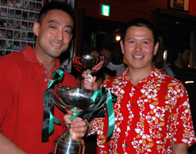
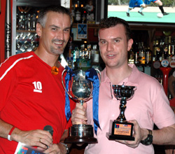
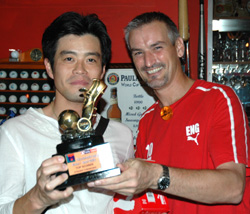

|
Legends, Saturday 7th July. The ever growing Tokyo Metropolis League community, comprised of players from both divisions, referees, sponsors and supports, descended on Legends in Roppongi for the end of season party/award ceremony, On Saturday July 4th.
The evening kicked off with a sumptuous BBQ that many chose to wash down with one or two Vodka-Redbulls, followed by a Jägermeister or four, served by rubber-clad gals who claimed to be the official 'Jägermeister Girls', but those who had actually been to a Jägermeister sponsored event in the past, had their suspicions - perhaps it was the foreheads full of acne that initially roused suspicion.
Hibernian, for the second time in the leagues relatively short history, were presented with the TML Division 1 Champions Cup and finished the league 5-points clear of second placed rivals YCAC.France FC dynamo Etsushi Yoshikoshi, walked away with the 1st Division Golden Boot award for scoring a remarkable 16-goals in in 18-games, 4-goals clear of the second place sharpshooter.
In Division 2 it was the Saitama JETS that were crowned champions. They finished the season 3-points clear of the Kanto Celts who will also be looking forward to playing 1st Division football come September. However it was Stoneds striker Hidenori Yoshioka who, along with Yoshikoshi, earned himself a brand-new pair of Puma Para Mexico boots for being the top goal scorer in the 2nd Division.
The Swiss Kickers, despite finishing outside of the top-two in the 1st Division, salvaged some pride and some silverware by beating France FC 3-0 in the final to retain the (Wall Street Associates) Footy Japan Cup for the third successive year.
Sala player and author of the highly acclaimed 'Boz' short story, recently published in the TML Magazine, won the 'Match Report of the Season' award for his literary genius. (click here to read Roddy's winning report).
"The party was a fantastic way to end the season," said league organizer Sid LLoyd. "It was great to see so many of those involved with the league turning out to show their support, it almost brought a to my eye," admitted LLoyd in a rare, heartfelt moment(or he'd had a couple of Jägermeister too manyª. "I'd just like to thank all the players, referees and sponsors of the league like Mark and Garin from Legends and the Hobgoblin, not to mention my partners Paco, Jon and Leigh, for helping to make this season truly great.".
Reporter: Jon Day.
|